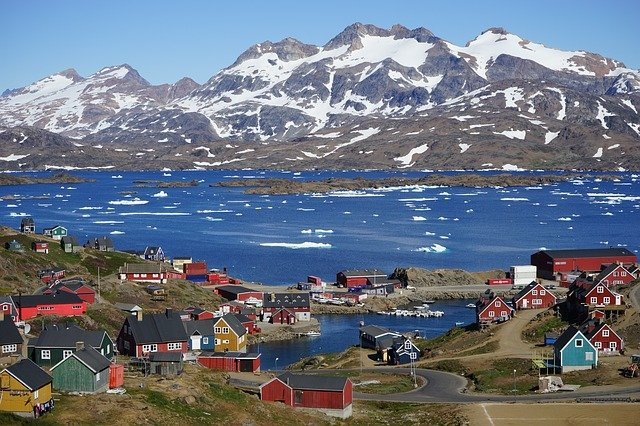

Greenland
The World's Largest Island
Capital and largest city is Nuuk.
Greenlandic and Danish have been used in public affairs since 1979. Majority of population can speak both.
Sites
Ilulissat Ice-fjord coast in Disko Bay.
Northeast Greenland National Park is the world's largest, covering an area of 972,000 square kilometers.